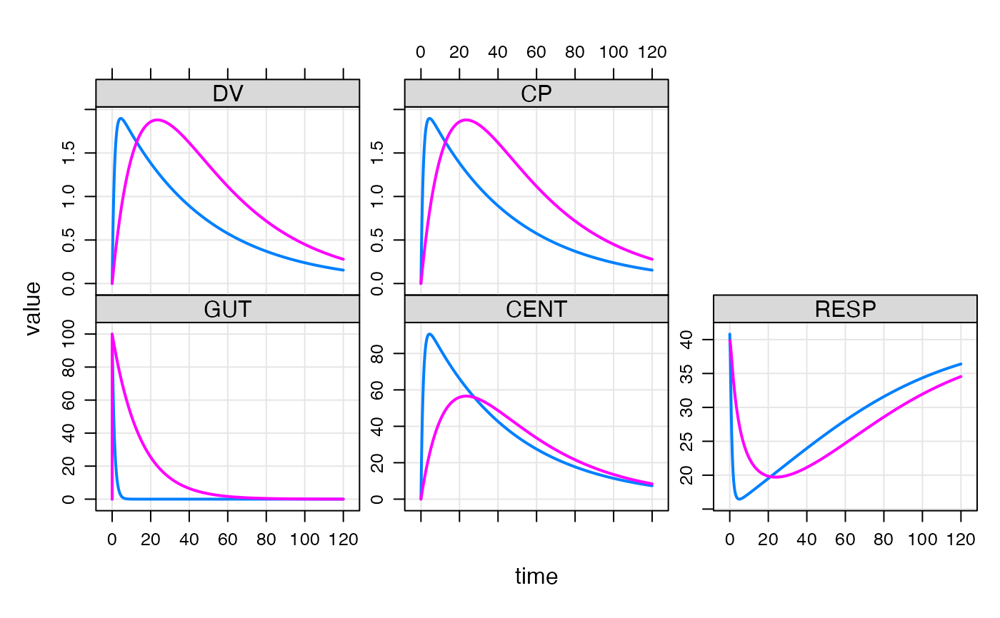

The individual data set (idata_set) is a data frame with one
row for each individual in a population, specifying parameters and
other individual-level data.
idata_set(x, data, ...)
# S4 method for mrgmod,data.frame
idata_set(
x,
data,
.subset = TRUE,
.select = TRUE,
object = NULL,
need = NULL,
...
)
# S4 method for mrgmod,ANY
idata_set(x, data, ...)
# S4 method for mrgmod,missing
idata_set(x, object, ...)model object
a data set that can be coerced to data.frame
passed along
an unquoted expression passed to
dplyr::filter; retain only certain rows in the data set
passed to dplyr::select; retain only certain
columns in the data set; this should be the result of a call to
dplyr::vars()
character name of an object existing in $ENV
to use for the data set
passed to inventory
The idata_set is a data.frame that specifies individual-level
data for the problem. An ID column is required and there
can be no more than one row in the data frame for each individual.
In most cases, the columns in the idata_set have the same names
as parameters in the param list. When this is the case,
the parameter set is updated as the simulation proceeds once at the
start of each individual. The `idata_set` can also be used to
set initial conditions for each individual: for a compartment called
CMT, make a column in idata_set called CMT_0 and
make the value the desired initial value for that compartment. Note that
this initial condition will be over-ridden if you also set the CMT_0
in $MAIN.
The most common application of idata_set is to specify a population
or batch of simulations to do. We commonly use idata_set with an
event object (see ev). In that case, the event gets applied
to each individual in the idata_set.
It is also possible to provide both a data_set and a idata_set.
In this case, the idata_set is used as a parameter lookup for IDs
found in the data_set. Remember in this case, it is the data_set
(not the idata_set) that determines the number of individuals in the
simulation.
An error will be generated if any parameter columns in the
input idata set contain NA.
mod <- mrgsolve::house()
data(exidata)
exidata
#> ID CL VC KA KOUT IC50 FOO
#> 1 1 1.050 47.80 0.8390 2.450 1.280 4
#> 2 2 0.730 30.10 0.0684 2.510 1.840 6
#> 3 3 2.820 23.80 0.1180 3.880 2.480 5
#> 4 4 0.552 26.30 0.4950 1.180 0.977 2
#> 5 5 0.483 4.36 0.1220 2.350 0.483 10
#> 6 6 3.620 39.80 0.1260 1.890 4.240 1
#> 7 7 0.395 12.10 0.0317 1.250 0.802 8
#> 8 8 1.440 31.20 0.0931 4.030 1.310 7
#> 9 9 2.570 18.20 0.0570 0.862 1.950 3
#> 10 10 2.000 6.51 0.1540 3.220 0.699 9
mod %>%
idata_set(exidata, ID <= 2) %>%
ev(amt = 100) %>%
mrgsim() %>%
plot()

mod %>%
idata_set(exidata) %>%
ev(amt = 100) %>%
mrgsim()
#> Model: housemodel
#> Dim: 4820 x 7
#> Time: 0 to 120
#> ID: 10
#> ID time GUT CENT RESP DV CP
#> 1: 1 0.00 0.00 0.00 40.82 0.0000 0.0000
#> 2: 1 0.00 100.00 0.00 40.82 0.0000 0.0000
#> 3: 1 0.25 81.08 18.87 38.12 0.3947 0.3947
#> 4: 1 0.50 65.74 34.06 33.59 0.7126 0.7126
#> 5: 1 0.75 53.30 46.28 29.41 0.9682 0.9682
#> 6: 1 1.00 43.21 56.08 26.06 1.1733 1.1733
#> 7: 1 1.25 35.04 63.93 23.53 1.3374 1.3374
#> 8: 1 1.50 28.41 70.19 21.64 1.4684 1.4684
mod %>% ev(amt = 100) %>% mrgsim(idata=exidata)
#> Model: housemodel
#> Dim: 4820 x 7
#> Time: 0 to 120
#> ID: 10
#> ID time GUT CENT RESP DV CP
#> 1: 1 0.00 0.00 0.00 40.82 0.0000 0.0000
#> 2: 1 0.00 100.00 0.00 40.82 0.0000 0.0000
#> 3: 1 0.25 81.08 18.87 38.12 0.3947 0.3947
#> 4: 1 0.50 65.74 34.06 33.59 0.7126 0.7126
#> 5: 1 0.75 53.30 46.28 29.41 0.9682 0.9682
#> 6: 1 1.00 43.21 56.08 26.06 1.1733 1.1733
#> 7: 1 1.25 35.04 63.93 23.53 1.3374 1.3374
#> 8: 1 1.50 28.41 70.19 21.64 1.4684 1.4684